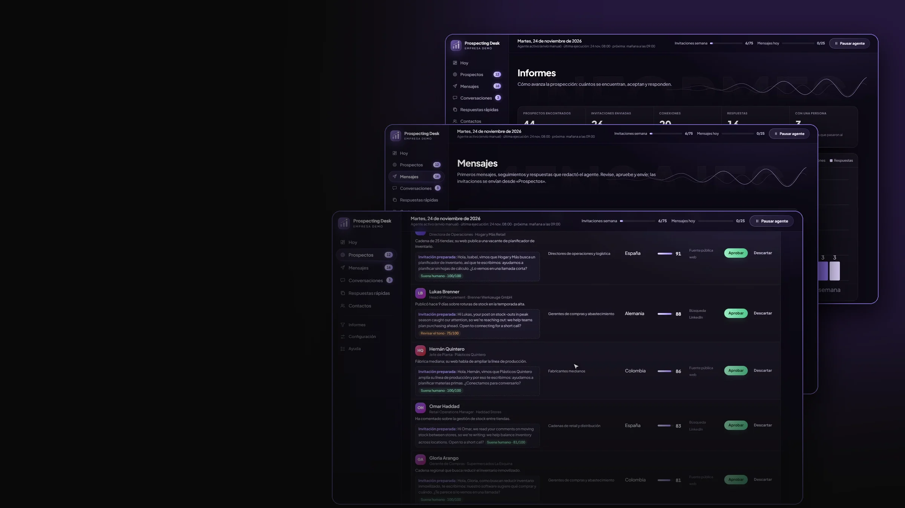

Overview
A full day of outreach, reviewed in minutes.
The assistant works in the background. When your team opens the desk, the day is already prepared: new prospects to approve, messages ready to send, replies that need a decision and the conversations that are turning into meetings.
Why teams use it
More conversations. Less busywork. Zero surprises.
Hours back, every week
Research, writing and follow-ups happen on their own. Your team spends its time on calls, not on copy-pasting.
Messages that sound human
Every note starts from something real about the person and is written in your company's voice — never a mass template.
No lead slips through
Follow-ups go out on time, replies are answered or escalated, and warm leads are flagged the moment they appear.
Your brand stays safe
Anything about prices, promises or legal topics is held back for a person. Nothing is ever sent without approval.
How it works
The assistant does the legwork. Your team makes the calls.
Every weekday it works through LinkedIn the way a careful salesperson would, then puts everything in front of your team to review.
Find
Searches the audiences you care about and scores how well each person fits — with the reason why.
Write
Picks one real, recent detail from each profile and writes a short, personal note in your voice.
Check
Screens every draft before anyone sees it, and holds back anything sensitive or anything that sounds machine-written.
Approve
Your team confirms the exact text with one click. Interested contacts are handed over with the full context.
Prospects
Know who to contact — and why.
Every morning brings a fresh list of people who match your ideal customer, each with a fit score, the reason they fit and a personal invitation already written. Approve the ones you like with one click.
Human in the loop
Automation that never speaks out of turn.
Simple replies are handled for you. When someone asks about prices, contracts or results, the assistant drafts a careful answer, explains why it paused, and waits for your team. Your reputation is never left to a machine.
Conversations
Warm leads, handed over at the right moment.
The moment a contact wants to meet, they're flagged for your team with the whole conversation attached — so the first call starts warm, not from zero.
Reports
Proof of what's working.
See the whole funnel at a glance — prospects found, invitations accepted, replies and meetings — and which kind of message is pulling ahead, week by week.